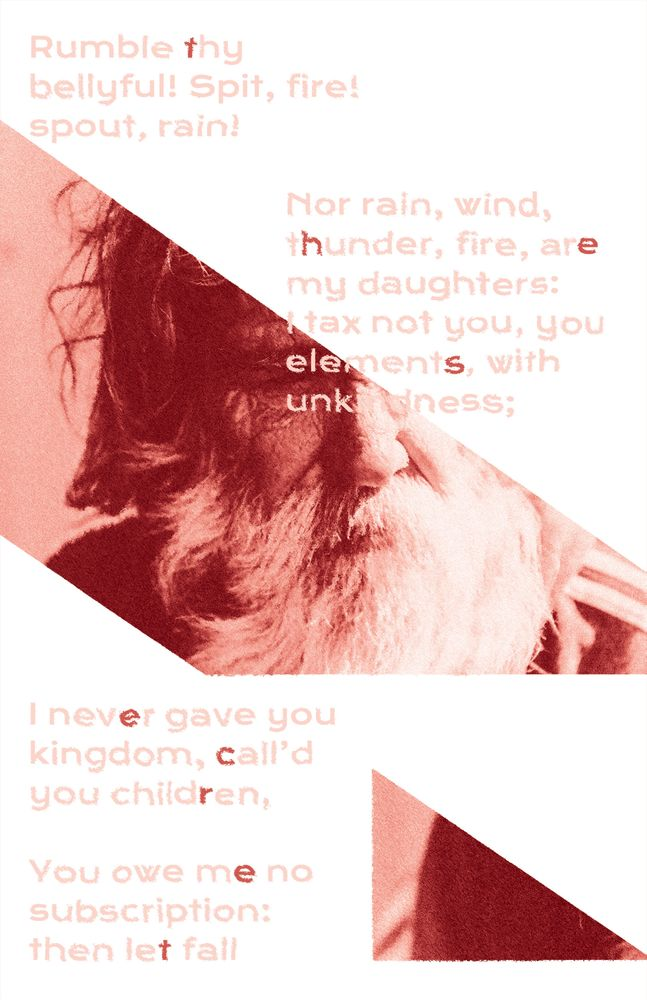

Sonnet explorer

“The Secret” identity system“The Secret” identity systemPlatform Economies Research Network (PERN)To say a nameNew School RadioNew School RadioNew School RadioTractatus Logico-Philosophicus readerCommon Language studio websiteImage Magazine landing page generatorWhat’s on your plate? (for L.A. Times)Parsons thesis - Goby